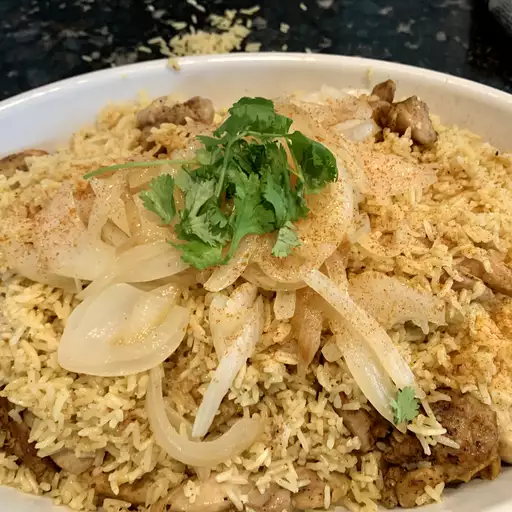

Chicken Biryani

Description
Chicken biryani is a delicious South Asian dish made with spiced rice and tender chicken pieces. It is typically layered with aromatic herbs and spices, and often includes vegetables like onions, tomatoes, and potatoes.
Ingredients
- Basmati rice
- Chicken pieces
- Onions
- Tomatoes
- Potatoes (optional)
- Plain yogurt
- Garlic
- Ginger
- Green chilies (optional)
- Cumin
- Coriander
- Turmeric
- Garam masala
- Red chili powder
- Salt
- Vegetable oil
- Ghee (clarified butter)
- Fresh cilantro leaves
- Fresh mint leaves
- Water or chicken broth (for cooking rice)
Steps to prepare
- Soak 2 cups of basmati rice in cold water for 30 minutes.
- Heat 1/4 cup of vegetable oil and 1/4 cup of ghee in a large pot over medium heat.
- Cook sliced onions until golden brown.
- Add chicken pieces and cook until lightly browned.
- Add chopped tomatoes, cubed potatoes (optional), minced garlic, grated ginger, chopped green chilies (optional), and spices (cumin, coriander, turmeric, garam masala, red chili powder, and salt). Cook for 5-7 minutes.
- Add 1 cup of plain yogurt and mix well. Cook for another 5-7 minutes.
- Drain the soaked rice and add it to the pot. Add 2 cups of water or chicken broth. Mix well.
- Bring the mixture to a boil, then reduce heat to low, cover the pot, and simmer for 15-20 minutes until the rice is cooked and the liquid is absorbed.
- Garnish with chopped fresh cilantro and mint leaves. Serve hot.